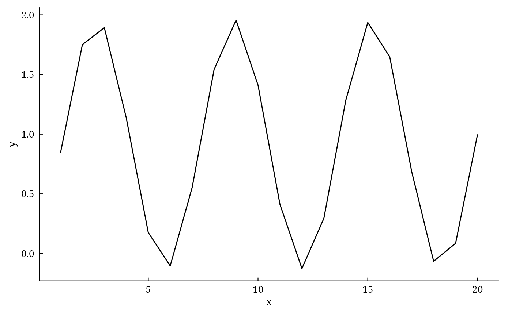
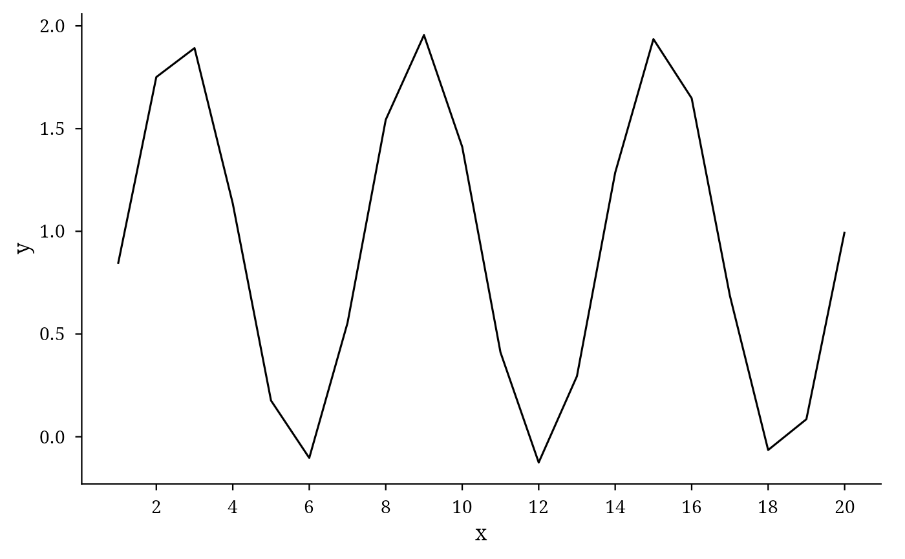

The theme used by every plot() method of DiallelAnalysisR (identical in all packages of the
author): theme_classic with a serif font, black axis lines, ticks pointing inwards and no
grid, close to the look of TikZ/pgfplots figures in LaTeX documents. The plot() methods also use
scales::pretty_breaks(n = 10) on every continuous axis. Save figures with da_save.
Usage
da_theme(
base_size = 11,
base_family = "serif",
ticks_inward = TRUE,
legend_position = "bottom"
)Arguments
- base_size
base font size in points (default 11).
- base_family
font family (default
"serif"; for example"Latin Modern Roman"when installed, to match LaTeX documents).- ticks_inward
logical; ticks point into the panel, as in pgfplots (default
TRUE).- legend_position
position of the legend (default
"bottom").
See also
Other DiallelAnalysisR utilities:
da_export(),
da_notation(),
da_reference(),
da_save()
Author
Muhammad Yaseen (myaseen208@gmail.com)
Examples
library(ggplot2)
p <-
ggplot(data = data.frame(x = 1:20, y = cumsum(sin(1:20))), mapping = aes(x = x, y = y)) +
geom_line()
p +
da_theme(
base_size = 11
, base_family = "serif"
, ticks_inward = TRUE
, legend_position = "bottom"
)

p +
da_theme(
base_size = 12
, base_family = "serif"
, ticks_inward = FALSE
, legend_position = "right"
) +
scale_x_continuous(breaks = scales::pretty_breaks(n = 10))
